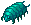

File list
This special page shows all uploaded files.
{kind=link}
{kind=link}
| Date | Name | Thumbnail | Size | User | Description | Versions |
|---|---|---|---|---|---|---|
| 16:08, 8 March 2019 | 2136.gif (file) | 9 KB | Alice | 1 | ||
| 21:24, 20 March 2017 | 2152.gif (file) | 8 KB | AloeLeaflet | 1 | ||
| 21:34, 20 March 2017 | 2156.gif (file) | 23 KB | AloeLeaflet | 1 | ||
| 20:36, 7 May 2019 | 2163.png (file) |  |
10 KB | Panic | 1 | |
| 11:08, 24 May 2016 | 2168.png (file) | 566 bytes | Mayo | 1 | ||
| 02:11, 16 April 2016 | 2186 coelacanth.png (file) | 12 KB | Renata | 1 | ||
| 02:12, 16 April 2016 | 2189 coelacanth.png (file) | 12 KB | Renata | 1 | ||
| 19:15, 14 April 2016 | 22008.png (file) | 505 bytes | Mayo | id | 1 | |
| 13:54, 24 May 2016 | 22009.png (file) | 512 bytes | Mayo | 1 | ||
| 07:44, 10 June 2016 | 22043 supp part AGI.png (file) |  |
8 KB | Renata | 1 | |
| 07:45, 10 June 2016 | 22044 reinforced booster.png (file) |  |
9 KB | Renata | 1 | |
| 08:04, 6 April 2016 | 22046 airship's boots.png (file) |  |
10 KB | Renata | 1 | |
| 08:07, 6 April 2016 | 22047 felrock's boots.png (file) |  |
11 KB | Renata | 1 | |
| 09:36, 3 July 2016 | 22059.png (file) | 12 KB | Lunch | 1 | ||
| 07:24, 27 January 2017 | 22075 rift shoes.png (file) | 10 KB | Renata | 1 | ||
| 15:09, 12 September 2018 | 22141.png (file) | 14 KB | I Know To Write | YSF Greaves#Werner's Laboratory | 1 | |
| 01:49, 7 May 2019 | 22199.png (file) |  |
14 KB | I Know To Write | 1 | |
| 02:31, 7 May 2019 | 22200.png (file) | 11 KB | I Know To Write | 1 | ||
| 03:12, 7 May 2019 | 22201.png (file) |  |
11 KB | I Know To Write | 1 | |
| 19:51, 14 April 2016 | 2286.png (file) | 297 bytes | Mayo | 1 | ||
| 12:31, 5 October 2018 | 2336.gif (file) | 12 KB | AloeLeaflet | 1 | ||
| 06:50, 1 October 2016 | 2348.gif (file) |  |
287 bytes | Cyphers | 1 | |
| 10:13, 15 April 2016 | 2357.png (file) | 681 bytes | Mayo | 1 | ||
| 16:09, 8 March 2019 | 2363.gif (file) |  |
13 KB | Alice | 1 | |
| 16:09, 8 March 2019 | 2364.gif (file) |  |
12 KB | Alice | 1 | |
| 17:15, 5 September 2015 | 2365.png (file) | 644 bytes | AloeLeaflet | 1 | ||
| 10:13, 15 April 2016 | 2374.png (file) | 494 bytes | Mayo | 1 | ||
| 13:55, 24 May 2016 | 2423.png (file) |  |
551 bytes | Mayo | 1 | |
| 13:54, 24 May 2016 | 2449.png (file) | 551 bytes | Mayo | 1 | ||
| 13:59, 24 May 2016 | 2485.png (file) | 534 bytes | Mayo | 1 | ||
| 20:35, 7 May 2019 | 25184.png (file) | 8 KB | Panic | 1 | ||
| 01:54, 16 April 2016 | 2528 FW.png (file) |  |
3 KB | Renata | 1 | |
| 01:54, 16 April 2016 | 2529 FW Queen.png (file) | 45 KB | Renata | 1 | ||
| 01:55, 16 April 2016 | 2530 FW Dark.png (file) | 14 KB | Renata | 1 | ||
| 17:05, 12 September 2018 | 2540.png (file) | 1 KB | I Know To Write | Faceworm Egg | 1 | |
| 01:55, 16 April 2016 | 2541 FW larva.png (file) |  | 489 bytes | Renata | 1 | |
| 16:48, 14 April 2016 | 2542.png (file) |  |
3 KB | Mayo | 1 | |
| 16:49, 14 April 2016 | 2543.png (file) |  |
2 KB | Mayo | 1 | |
| 16:49, 14 April 2016 | 2544.png (file) | 2 KB | Mayo | 1 | ||
| 16:49, 14 April 2016 | 2545.png (file) | 2 KB | Mayo | 1 | ||
| 16:49, 14 April 2016 | 2546.png (file) |  |
2 KB | Mayo | 1 | |
| 02:47, 16 April 2016 | 2549 arhi.png (file) |  |
3 KB | Renata | 1 | |
| 02:47, 16 April 2016 | 2550 dio anemos.png (file) | 2 KB | Renata | 1 | ||
| 02:49, 16 April 2016 | 2551 geffen shoplifter.png (file) |  |
3 KB | Renata | 1 | |
| 02:52, 16 April 2016 | 2552 geffen bully.png (file) | 3 KB | Renata | 1 | ||
| 02:52, 16 April 2016 | 2553 geffen gang member.png (file) |  |
2 KB | Renata | 1 | |
| 02:53, 16 April 2016 | 2554 faymont.png (file) |  |
2 KB | Renata | 1 | |
| 02:54, 16 April 2016 | 2555 ordre.png (file) |  |
2 KB | Renata | 1 | |
| 02:54, 16 April 2016 | 2556 blut hase.png (file) |  |
2 KB | Renata | 1 | |
| 02:55, 16 April 2016 | 2557 kuro akuma.png (file) | 3 KB | Renata | 1 |
{kind=link}
{kind=link}
{kind=link}
{kind=link}
{kind=link}
{kind=link}
{kind=link}
{kind=link}
{kind=link}
{kind=link}
{kind=link}
{kind=link}
{kind=link}
{kind=link}
{kind=link}
{kind=link}
{kind=link}
{kind=link}
{kind=link}
{kind=link}
{kind=link}
{kind=link}